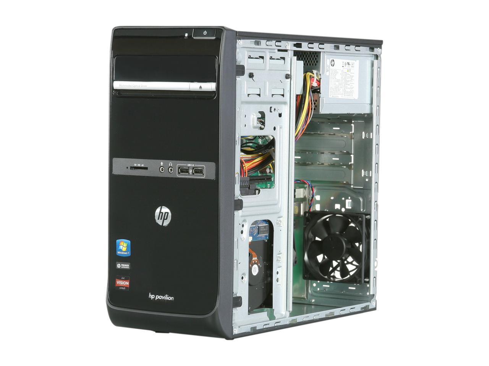

For as long as I can remember, I have always had a passion for technology. My first ever interaction with a computer came from my grandfather's HP Pavillion desktop.
I remember the first time I took it apart to fix a DVI display issue and from that moment forward, I was hooked on technology.

My interest in cybersecurity sparked from serveral interactions with one of my best friends. He was (and still is) a wiz with computers and had a pension for staying secure and private online. He introduced me into security and it is thanks to him that my skills have become what they are now.
Linux was first introduced to me when I was enrolled in the Limestone County Technical Career Center for Cybersecurity. There, students were given material ranging from novice to advanced levels of Information Security. It is within that course, that I was given a Raspberry Pi and told to install a particular distribution of Linux, Raspian.
The initial impression I had was not positive, but once again, thanks to my grandfather giving me access to old machines, I was able to get my hands of several different distributions of Linux. That is where I found my love and deep respect for the operating system.
While some of the knowledge I have comes from my background with technology, most of the things I know now are self-taught. I have an insaible hunger for knowledge and I try to learn something new everyday.
I am self-driven and self-motivated. The one thing that drives me to get up each morning and give my best is the desire to become the best possible me I can be. There's a lot of things that are out of my control, but what I can control is what I do and how much effort I give to the task, and goals I have given myself.